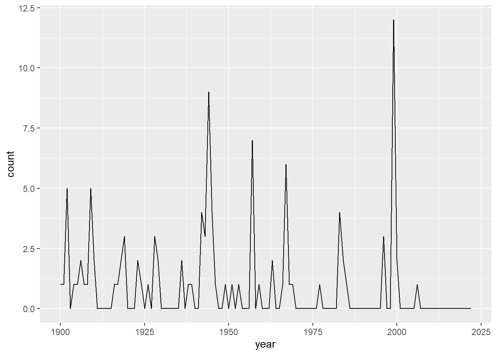

Modelling the probability of earthquakes (M >= 5.0) in North Anatolian Fault Zone
EDA
Let’s look and visualize the historical earthquake data.
Spatial data
Reading layer `ADM_ADM_0' from data source
`C:\Users\murat\Desktop\projects\MyDsProjects\EarthQuakeProbability\gadm41_TUR.gpkg'
using driver `GPKG'
Simple feature collection with 1 feature and 2 fields
Geometry type: MULTIPOLYGON
Dimension: XY
Bounding box: xmin: 25.66514 ymin: 35.81543 xmax: 44.83499 ymax: 42.10666
Geodetic CRS: WGS 84Time Span between Earthquake Occurrences
diff
Min. : 0.00
1st Qu.: 5.75
Median : 88.00
Mean : 358.88
3rd Qu.: 387.25
Max. :3933.00 
Earthquake Count By Year
Modelling the probability
Let’s fit Weibull distribution to distribution of days between two earthquakes occurred successively.
summary statistics
------
min: 0 max: 3933
median: 88
mean: 358.8796
estimated sd: 664.7659
estimated skewness: 3.002915
estimated kurtosis: 13.22284 [1] 0Fitting of the distribution ' weibull ' by maximum likelihood
Parameters :
estimate Std. Error
shape 0.3647605 0.02945412
scale 124.4717945 34.36191532
Loglikelihood: -618.5651 AIC: 1241.13 BIC: 1246.494
Correlation matrix:
shape scale
shape 1.0000000 0.2931453
scale 0.2931453 1.0000000Let’s calculate mean occurence period of earthquakes which have magnitudes equal or bigger than 5 (simulation and theoretical mean):
[1] "Simulated mean:"[1] 535.668[1] "Theoretical mean:"[1] 545.0535It is expected to have another earthquake having magnitude equal to 5 or above are average 545 days later than the preceding one.
Let’s plot the CDF:
If we look the data, the last earthquake was occurred at 2006-10-24, so 5753 days passed since last earthquake was occurred. The risk of an earthquake happening today is 98 %.
References
Earthquake historical data was downloaded from: http://deprem.afad.gov.tr/depremkatalogu
Map shape file was downloaded from: https://gadm.org/
Weibull distribution in earthquake probability modelling: https://www.researchgate.net/publication/26485414_Probabilistic_Prediction_of_the_Next_Earthquake_in_The_Nafz_North_Anatolian_Fault_Zone_Turkey_Kuzey_Anadolu_Fay_Zonunda_Nafz_Gelecek_Depremlerin_Olasiliksal_Tahmini
Weibull distribution fitting: https://stats.stackexchange.com/questions/230937/how-to-find-initial-values-for-weibull-mle-in-r
—
Thanks for reading. If you enjoyed, please share it.
Support my work from here GitHub Sponsors.